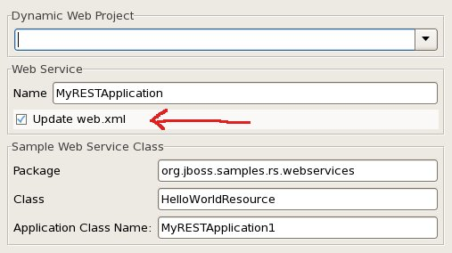
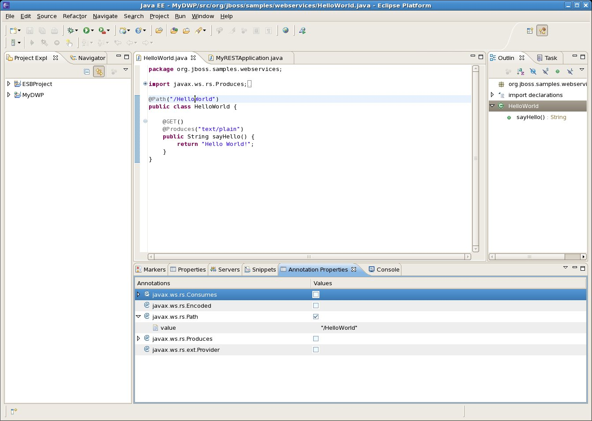
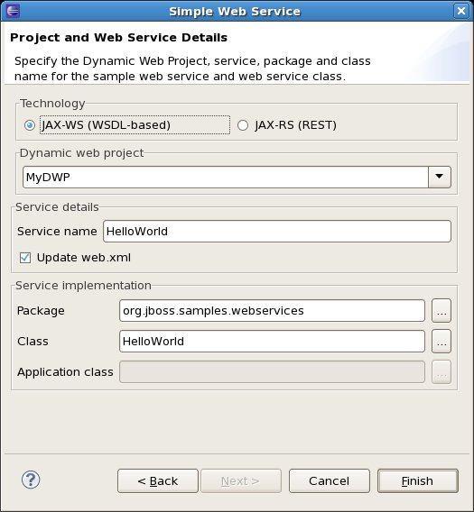

< Main Index Deltacloud Development Tools >
Web Service Tester |
|
| New Checkbox to Turn off Web.xml updates |
Starting in JBoss 6.0M4 entries in web.xml are not mandatory[1], only the fact that the web.xml file exists is mandatory. To handle this case, we now provide the option not to generate entries in the web.xml file. [1]: http://docs.jboss.org/resteasy/docs/2.0.0.GA/userguide/html_single/index.html#d0e219  |
JAX-WS and JAX-RS Annotations and the Annotation Properties View |
|
| Annotation Properties View |
There's a new Annotation Properties view in WTP for Eclipse Helios. It already comes pre-set with JAX-WS annotations and we've added JAX-RS annotations for RESTEasy as well. For a few additional details, check out this blog post.  |
Simple Web Service wizard |
|
| New wizard |
In addition to the two Sample Web Service wizards (Create a Sample Web Service and Create a Sample RESTful Web Service), we've now added a third wizard to the mix. The Simple Web Service wizard allows you to specify your own annotated JAX-WS, JAX-RS, and application classes to quickly get your web project going. For a walkthrough on using the wizard, check out Using the Sample Web Service Wizards in the wiki. |
|
|
|